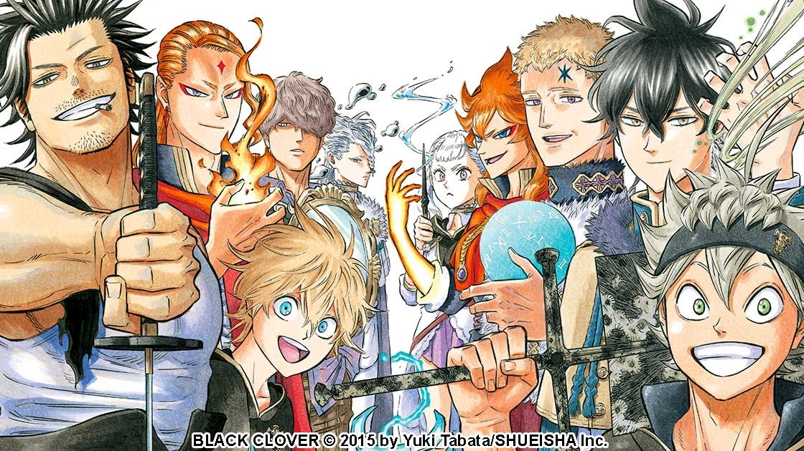

Los animes shonen abarcan una amplia variedad de géneros, desde la fantasía y la ciencia ficción
hasta las artes marciales y la aventura. Lo que los une es su capacidad para contar historias
emocionantes y llenas de valores como la amistad, la superación personal y la perseverancia. En este
artículo, exploraremos algunos de los mejores animes shonen de todos los tiempos, destacando sus
tramas intrigantes, personajes inolvidables y la influencia duradera que han tenido en la cultura
pop. Desde "Naruto" hasta "One Piece" y más allá, los amantes del anime encontrarán un mundo de
emocionantes aventuras por descubrir en el fascinante universo de los animes shonen. ¡Prepárate para
sumergirte en un viaje lleno de acción y emoción que te mantendrá al borde de tu asiento!

Shonen
Black Clover
"Black Clover" es un anime y manga shonen sobre Asta, un joven sin poderes mágicos que busca
convertirse en el Rey Mago en un mundo donde la magia es común. Junto a su amigo Yuno, enfrentan
desafíos y enemigos poderosos mientras persiguen sus sueños. La serie destaca por su acción y
desarrollo de personajes.
Shonen que se desarrolla en un mundo donde las personas nacen con superpoderes llamados
"Quirks." La historia se centra en Izuku Midoriya, un joven sin poderes que aspira a convertirse
en un héroe. Cuando hereda el Quirk de su héroe favorito, All Might, comienza su entrenamiento
en la Academia U.A. High School y se embarca en una emocionante aventura llena de desafíos y
combates contra villanos. La serie destaca por su acción, personajes memorables y exploración de
temas de heroísmo y la superación personal.
Gon Freecss, un niño que aspira a convertirse en un "Cazador" para encontrar a su padre
desaparecido, quien también es un Cazador. Los Cazadores son individuos con habilidades
excepcionales que exploran el mundo en busca de tesoros, criaturas exóticas y desafíos. Gon se
une a otros aspirantes a Cazador y se enfrenta a desafíos extremos, incluyendo la búsqueda de su
padre y la participación en el prestigioso Examen de Cazadores. La serie es conocida por su
compleja trama, personajes fascinantes y giros inesperados, y a menudo se adentra en temas
profundos y morales.
Es un anime y manga shonen que sigue la historia de dos hermanos, Edward y Alphonse Elric, que
utilizan la alquimia para buscar la "Piedra Filosofal" y restaurar sus cuerpos tras un
experimento fallido. La serie explora temas de sacrificio, redención y las consecuencias de la
ciencia, y los hermanos enfrentan desafíos mientras desvelan un mundo lleno de magia y peligro.
.png)